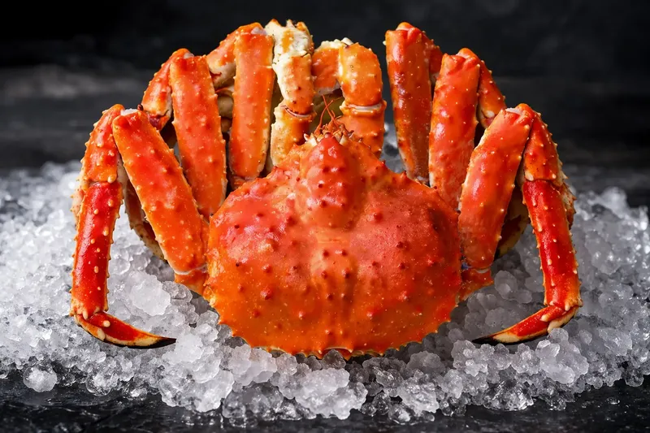

Крабы
Краб камчатский варено-мороженый целый
Цена и наличие
- 1 кг150 BYN / кгВ наличии
Данные на 23.11.2026.
Характеристики
- Размерный ряд
- -
- Вид разделки
- целый подарочный
- Тип продукта
- варено-мороженый
Описание
Краб камчатский варёно-мороженый (целый) — это премиальный деликатес с насыщенным вкусом и нежной текстурой мяса. Добытый в холодных водах Дальнего Востока, он отличается высоким качеством, естественной свежестью и богатым содержанием полезных веществ.
ОСНОВНОЕ
Пищевая ценность на 100 г продукта белки – 16-22 г, жиры – 1-3.4 г, углеводы – 0 г Энергетическая ценность на 100 г продукта 96 ккал Тип продукта варено-мороженый Условия и срок хранения хранить при температуре -10 — -20 градусов, не более 3 месяцев со дня производства
ДОПОЛНИТЕЛЬНО
Целый варено-мороженый камчатский краб — эффектный морской деликатес для праздничного стола, семейного застолья или подачи на большую компанию. Такой формат подходит тем, кто хочет подать краба целиком или самостоятельно разделать его и использовать мясо для закусок и горячих блюд. Камчатский краб ценится за плотное, сочное мясо и характерный сладковатый вкус. Основная часть мяса находится в конечностях и клешнях, поэтому после разделки продукт удобно использовать как для самостоятельной подачи, так и для приготовления различных блюд с натуральным крабовым мясом. Поскольку краб варено-мороженый, он уже прошел термическую обработку до заморозки. Перед употреблением его достаточно правильно разморозить. После этого краба можно подавать охлажденным или аккуратно прогреть. Длительное повторное приготовление нежелательно, так как мясо может потерять часть сочности. Целого камчатского краба можно сервировать как центральное блюдо праздничного стола. Мясо хорошо сочетается с лимоном, сливочным маслом, свежей зеленью, овощами и легкими соусами. Также его можно использовать для салатов, тарталеток, пасты, ризотто, канапе и других холодных и горячих блюд. Покупка целого краба особенно удобна, если важна эффектная подача и возможность самостоятельно разделать продукт непосредственно перед застольем. Фактический вес и размер краба могут отличаться в зависимости от партии. В продаже — целый варено-мороженый камчатский краб. Подойдет для праздничного стола, семейного ужина, застолья на компанию и приготовления разнообразных блюд с натуральным крабовым мясом.